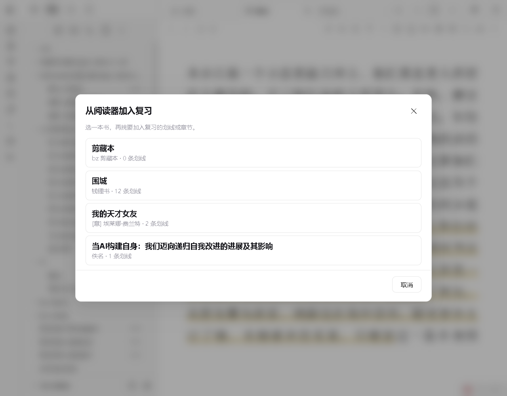
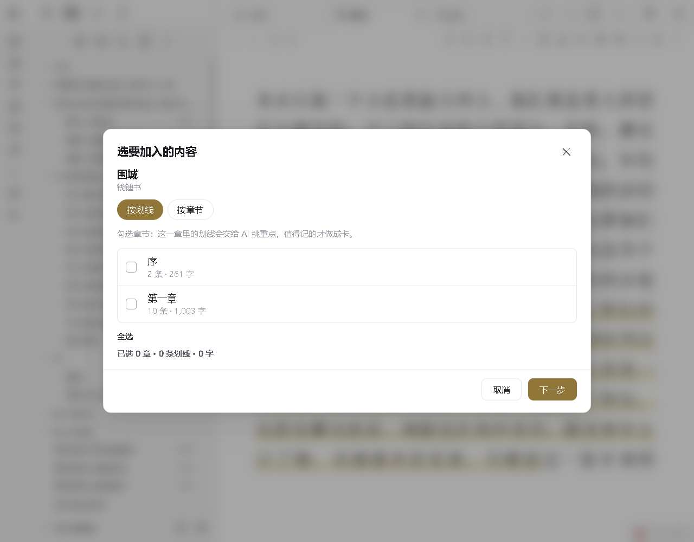
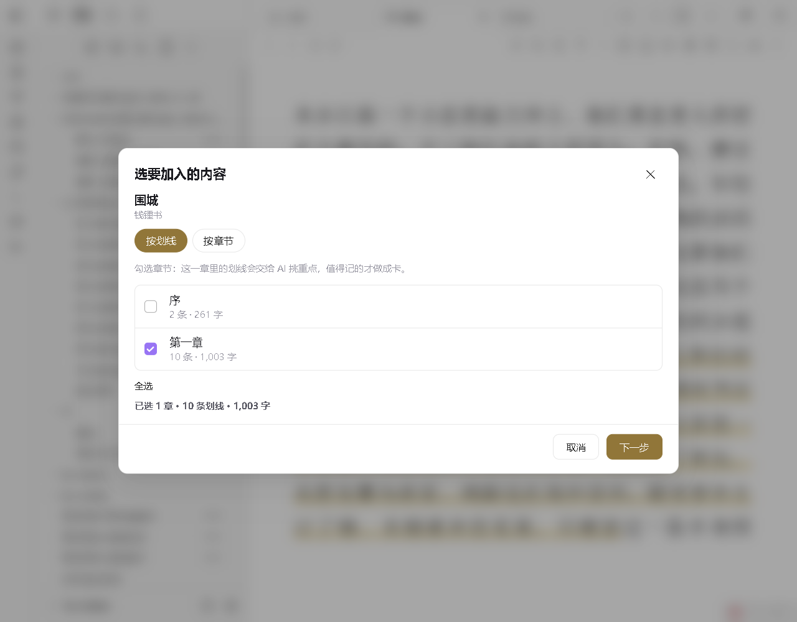
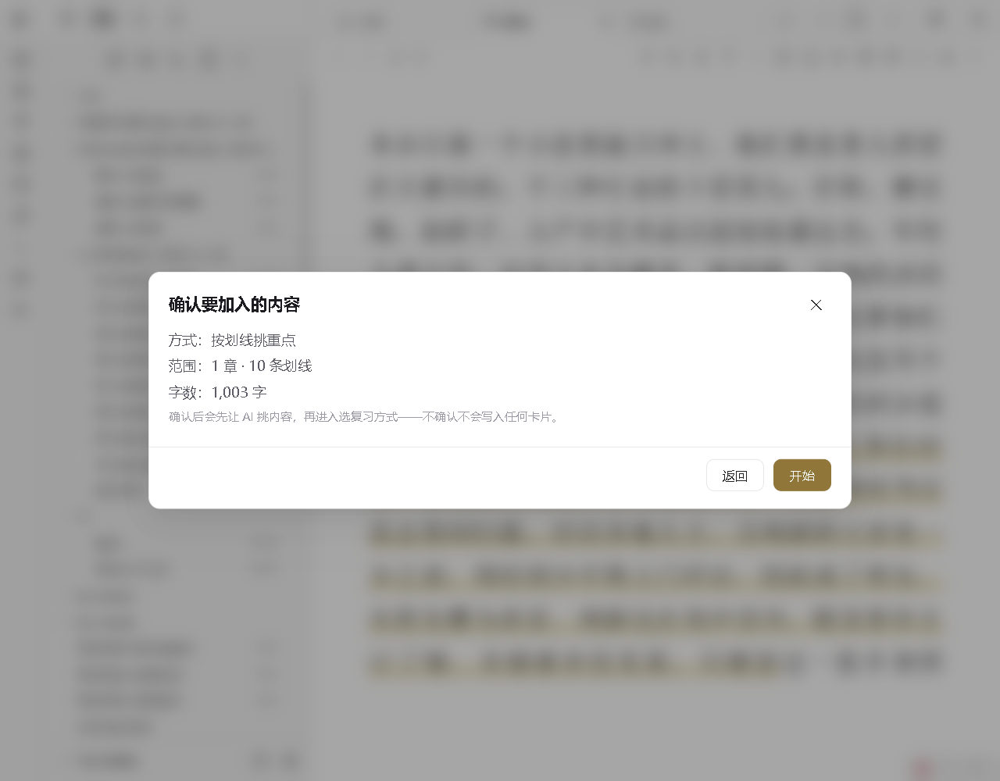
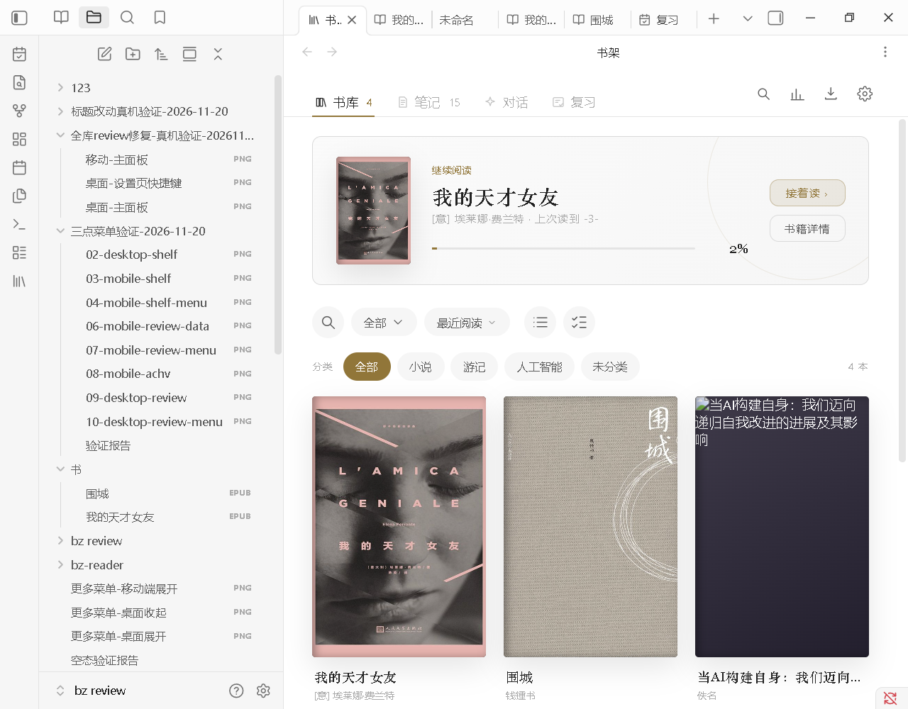
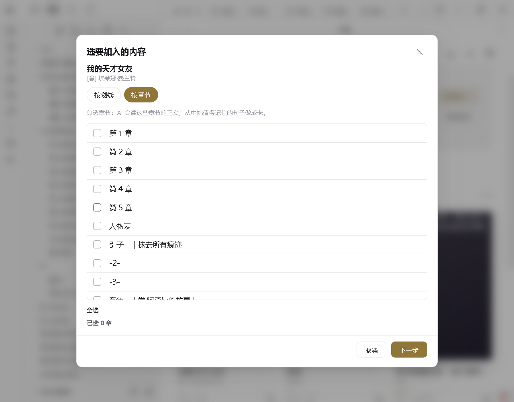
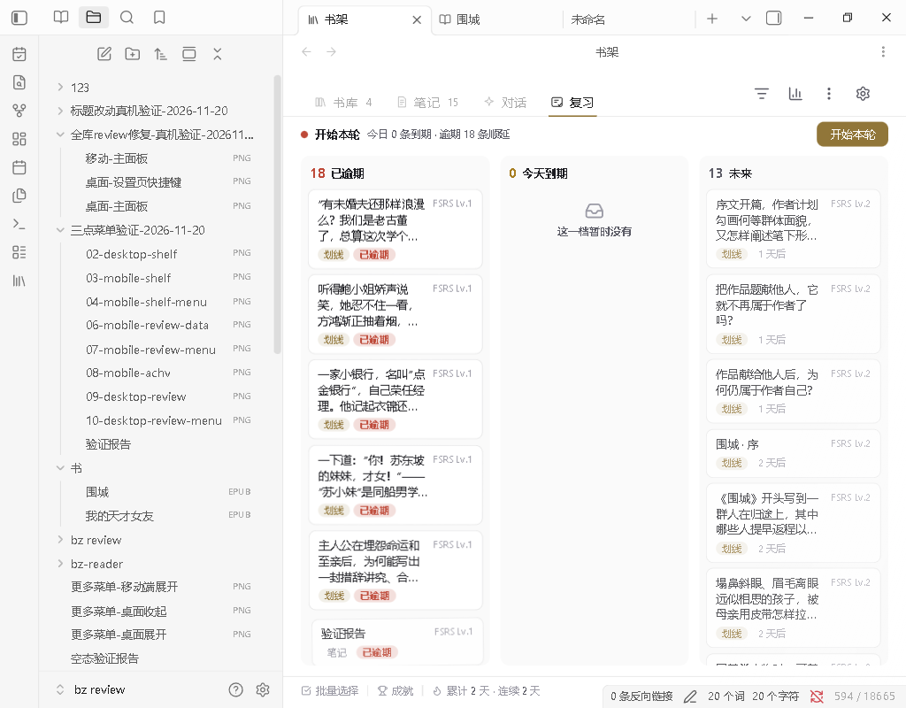
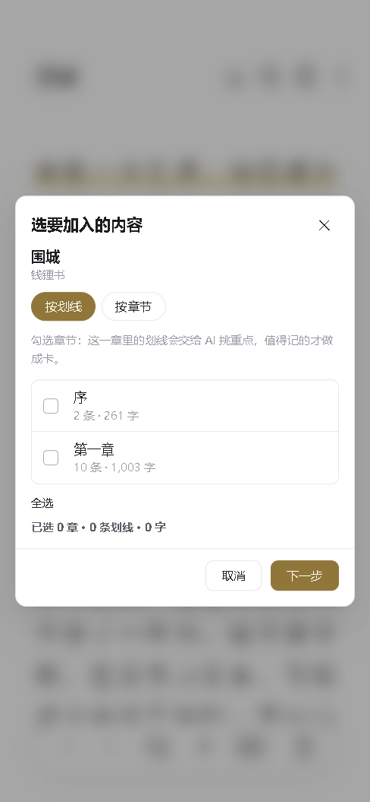

deepseek-flash）验证链路，没有另起假服务。挑内容第一次等了 75 秒没回来、第二次重跑成功——模型首包慢，不是代码失败。
复习的一切归 bz-review，Reader 只剩两个「内容供货」接口：
source-pick.ts（挑范围纯逻辑）、source-pick-ui.ts（选范围窗口）、reader-source.ts（探测 Reader 接口）；门面契约升到 v6；新增命令 review-add-reader；面板空态加「从阅读器加入复习」。ReviewAddFlow / BookScopeFlow / review-scope.ts / review-run.ts（-1698 行），review-add.ts 只剩薄入口：找到 Review 门面、把书 id 递过去。readerApi.reviewCatalog(bookId?)（列书 / 划线 / 章节目录）、readerApi.reviewChapterText(bookId, index)（读正文）。命令面板跑「从阅读器加入复习」，先列书（带划线条数），选书后勾章节，再在确认页看清方式 / 范围 / 字数。




点「开始」先让 AI 从 10 条划线里挑重点，挑完原地出现四张方式卡；选「全文回忆」后入库。

第二次跑同一批，AI 挑出 3 条全部命中已有计划，窗口直接说「这 3 条都已经在复习计划里」并只留「关闭」。

右键书卡 → 菜单「加入复习」→ 直接打开 Review 的勾选页，书名和划线已经在里面，不用再选书。
验收时「复习」页签的已逾期列表里已经有围城第一章那几张划线卡，排期也正常。

390 宽下选书、勾章、确认三屏都单列排布，底部按钮并排可点。

代码上侧栏按钮和书右键共用同一函数（openReviewAdd → openReaderFlow({ bookId })），单测 tests/review-add-thin.test.ts 已断言；真机这次只走通「书右键」，侧栏那颗按钮要在阅读界面里点，CDP 没能稳定进阅读态（点书卡只停在书架），没有截到独立证据。
| 问题 | 说明 |
|---|---|
| 3 个 jsdom 测试文件起不来 | settings-split / settings-page / review-dialogs 报 Cannot find module 'is-potential-custom-element-name'。根因是共享 pnpm store 里多个包目录被清空；本轮补了 6 个包仍继续报下一个缺包，需要在该仓跑一次完整 pnpm install。不影响产物运行，只影响这三个用例。 |
| AI 首包慢 | 第一次「开始」后 75 秒仍是加载态，重跑一次成功；属模型侧延迟。 |
| 侧栏入口缺截图 | 见第 7 项，建议下一轮真机手动补一张。 |
node_modules junction，再 worktree remove → prune → branch -d）。